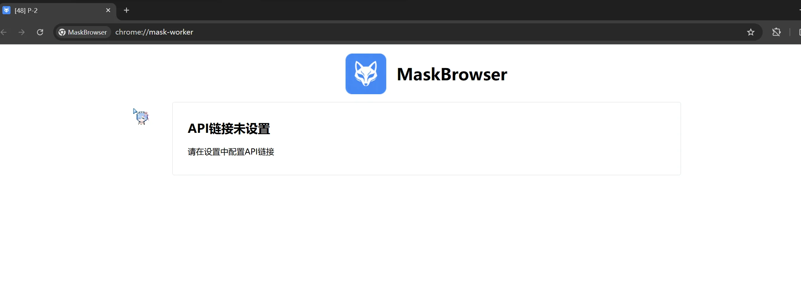
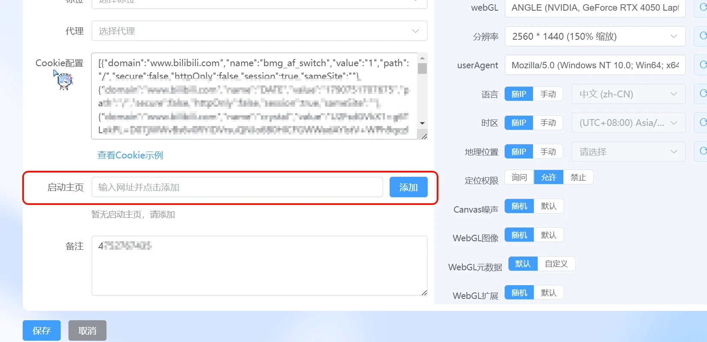
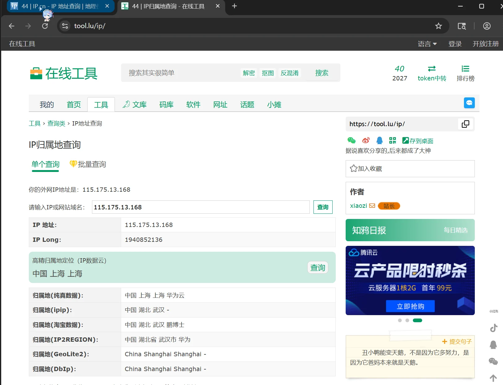
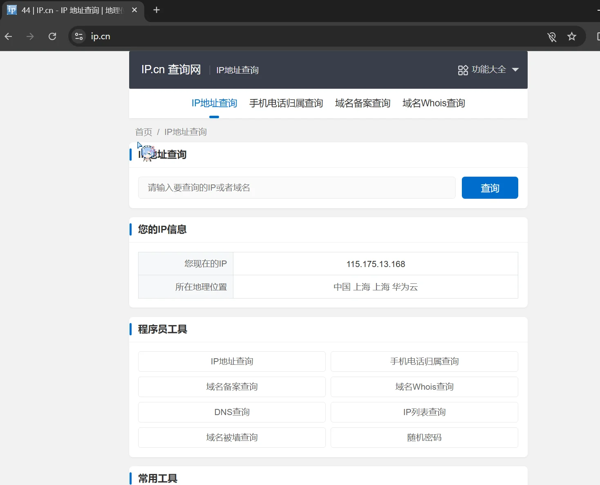
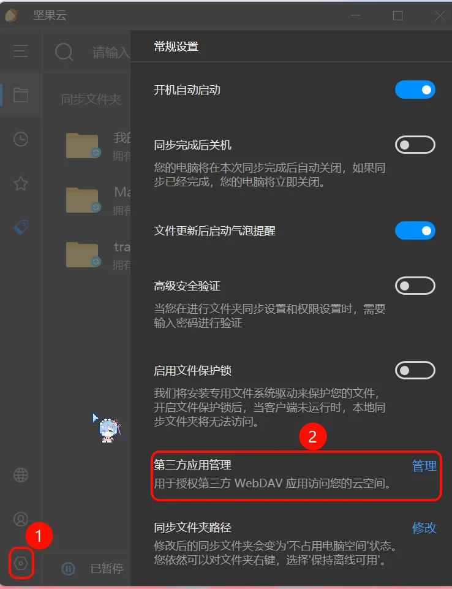
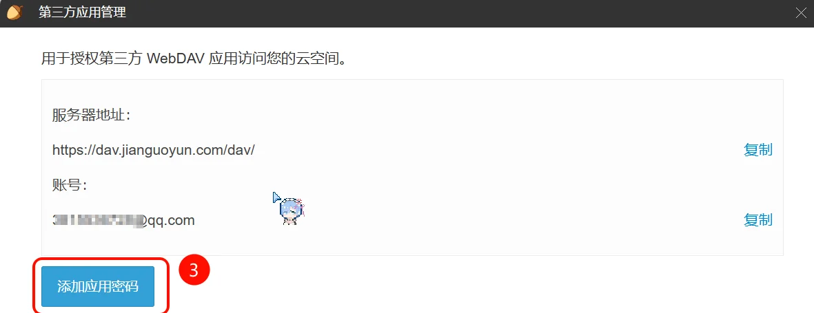
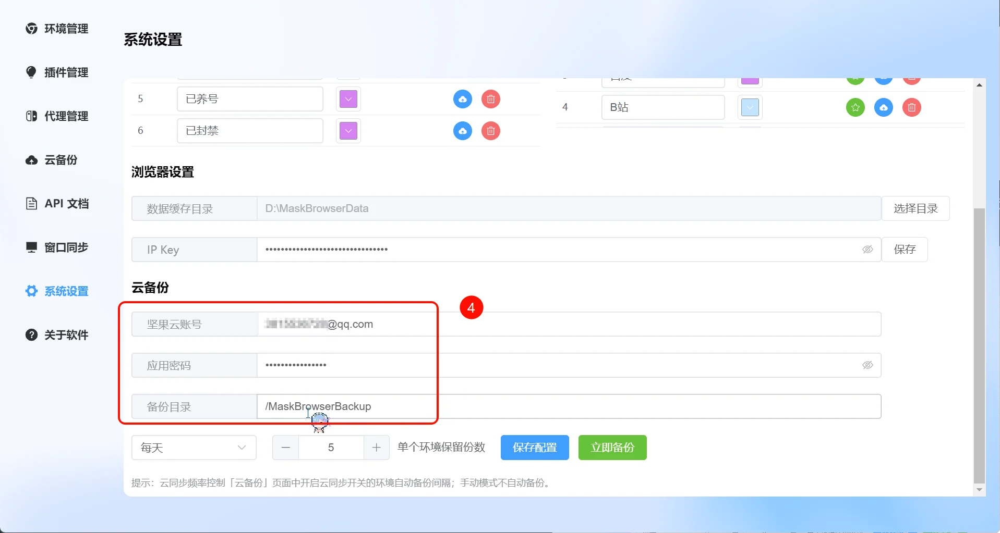
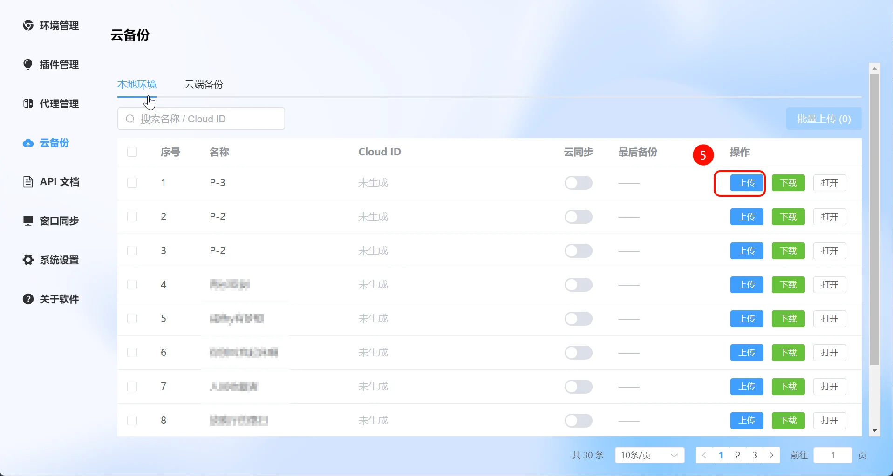

面具浏览器使用教程
01官网说明
官方入口一共两个，任选其一。
官方入口只有 maskbrowse.ccwu.cc 与 maskbrowse.kicp.fun 两个域名。其他来源的都是盗版。
小提示：安装时如果失败了，退出火绒、腾讯安全管家等安全软件，再安装即可,安装包被杀毒软件误判了。
02IP 查询：用启动页代替 IP Key
IP Key 暂不开放。把环境的「启动主页」设成以下两个 IP 查询网址任意一个就行了，之后每次打开这个环境，第一屏就能看到它当前的出口 IP。
01打开环境编辑页
在「环境管理」里新建一个环境，或者点开已有环境的编辑页。刚装好软件、还没设置启动页时，打开环境看到的是下面这个默认页面，IP 区域提示「API 链接未设置」，属于正常现象。

02把查询网址填进「启动主页」
在编辑页找到「启动主页」输入框，粘贴上面任意一个网址，点击「添加」，再点底部的「保存」。

03启动环境，第一屏直接看 IP
之后每次打开这个环境，启动页都会先加载 IP 查询站点，出口 IP 和归属地一眼就能看到，不用再记 IP Key，也不用装插件。下面是两种查询站点的实际效果。


03云备份：换电脑也能接着用
云备份会把本地浏览器环境完整上传到坚果云。换到另一台电脑登录同一个账号后下载恢复即可继续使用，也能防止环境意外丢失。
关于其他 WebDAV 网盘：云备份的服务器地址固定为坚果云 https://dav.jianguoyun.com/dav/，自定义 WebDAV 会在后续版本提供。现阶段用坚果云备份即可，下面以它为例。
01注册坚果云，生成应用密码
打开坚果云官网 jianguoyun.com 下载客户端并注册账号。进入「设置」，找到「第三方应用管理」，点「管理」后点击「添加应用密码」，生成一条云备份专用密码。


02回填到面具浏览器的云备份设置
服务器地址已经内置，不用改。打开「系统设置」，在「云备份」区域填入坚果云账号和上一步的应用密码，备份目录保持默认，最后点「保存配置」。

03上传环境，换机后下载恢复
进入「云备份 → 本地环境」，点环境右侧的「上传」，环境就会备份到服务器；切到「云端备份」标签能看到刚上传的环境。换电脑并登录同一个坚果云账号后，点「下载」即可恢复。
实测：用 Windows 11 上传的环境，在另一台 Windows 10 电脑下载后可以正常启动。
